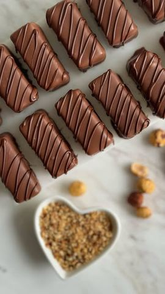

Moja beleška
SačuvanoSastojci
- Prvi sloj
- Drugi sloj
- Preliv
Priprema
Postupak pripreme: 1. Prvi sloj: Umutite slatku pavlaku, pa dodajte mlevenu plazmu, mlevene pečene lešnike i šećer u prahu. Dobro sjedinite i ravnomerno rasporedite na dno kalupa obloženog papirom za pečenje. 2. Drugi sloj: Umutite slatku pavlaku, zatim dodajte maskarpone sir, mlevenu plazmu i lešnik krem. Dobro promešajte dok ne dobijete glatku smesu, pa je nanesite preko prvog sloja. 3. Ostavite kolač u frižideru nekoliko sati (najbolje preko noći) kako bi se stegao. To je vrlo bitno da bi štanglice bile dovoljno čvrste za sledeći korak. 4. Kada se kolač potpuno stegne, isecite ga na štanglice. 5. Preliv: Otopite mlečnu čokoladu sa uljem. Svaku štanglicu pažljivo umačite u otopljenu čokoladu, pa ih vratite na papir za pečenje. 6. Za dekoraciju, otopite crnu čokoladu sa kašičicom ulja i napravite šare po glazuri. 7. Ostavite kolače u frižideru da se preliv stegne.
Originalni opis sa Instagrama
Kinder Bueno štanglice – recept koji ćete obožavati! 🤎🤎🤎 Pripremite savršeno sočne i kremaste kolačiće uz ovaj jednostavan recept: Sastojci: Prvi sloj: • 125 g slatke pavlake (umućene) • 125 g mlevene plazme • 100 g mlevenih pečenih lešnika • 30 g šećera u prahu Drugi sloj: • 150 g slatke pavlake (umućene) • 250 g maskarpone sira • 100 g mlevene plazme • 200 g lešnik krema Preliv: • 300 g mlečne čokolade • 5 kašika ulja • (za dekoraciju) 30 g crne čokolade + 1 kašičica ulja Postupak pripreme: 1. Prvi sloj: Umutite slatku pavlaku, pa dodajte mlevenu plazmu, mlevene pečene lešnike i šećer u prahu. Dobro sjedinite i ravnomerno rasporedite na dno kalupa obloženog papirom za pečenje. 2. Drugi sloj: Umutite slatku pavlaku, zatim dodajte maskarpone sir, mlevenu plazmu i lešnik krem. Dobro promešajte dok ne dobijete glatku smesu, pa je nanesite preko prvog sloja. 3. Ostavite kolač u frižideru nekoliko sati (najbolje preko noći) kako bi se stegao. To je vrlo bitno da bi štanglice bile dovoljno čvrste za sledeći korak. 4. Kada se kolač potpuno stegne, isecite ga na štanglice. 5. Preliv: Otopite mlečnu čokoladu sa uljem. Svaku štanglicu pažljivo umačite u otopljenu čokoladu, pa ih vratite na papir za pečenje. 6. Za dekoraciju, otopite crnu čokoladu sa kašičicom ulja i napravite šare po glazuri. 7. Ostavite kolače u frižideru da se preliv stegne. Sačuvajte recept i podelite ga s prijateljima. 🍪 • • • #kolac #sitnikolaci #kolacici #kinderbueno #ukusnahrana #ukusnirecepti #mojirecepti